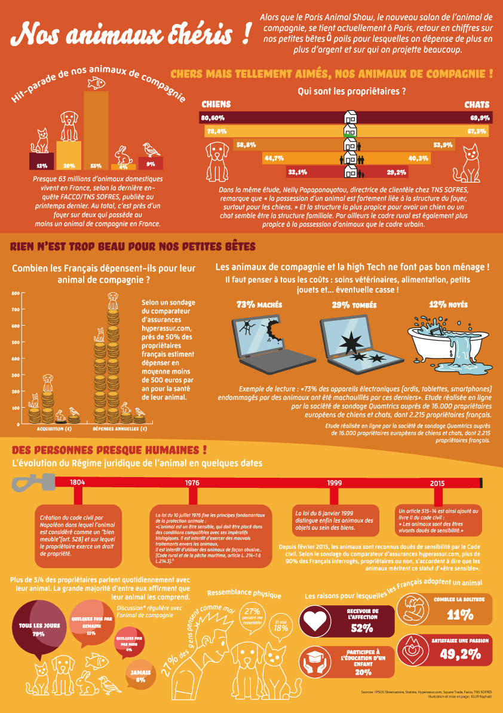

Infographie : La SPA
Le Projet
Réalisation d'une infographie de sensibilisation pour la Société Protectrice des Animaux (SPA).
Objectif : Présenter de manière visuelle et impactante les chiffres clés et les missions de l'association pour encourager l'adoption et le bénévolat.
Outils utilisés : Adobe Illustrator, InDesign.
L'Infographie Complète
